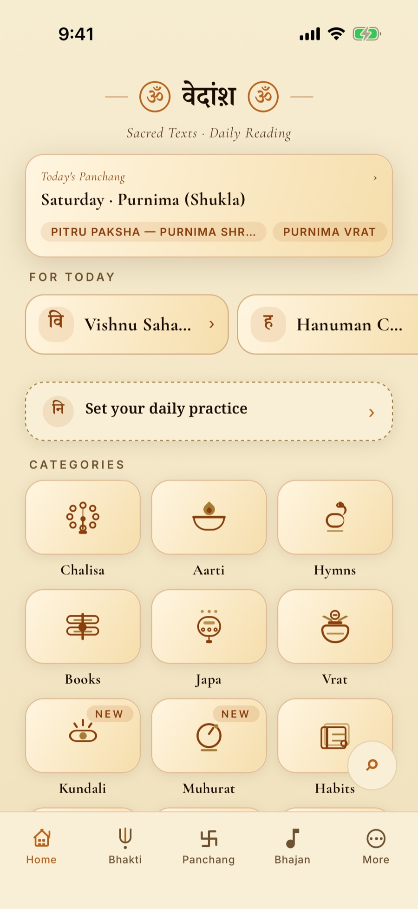
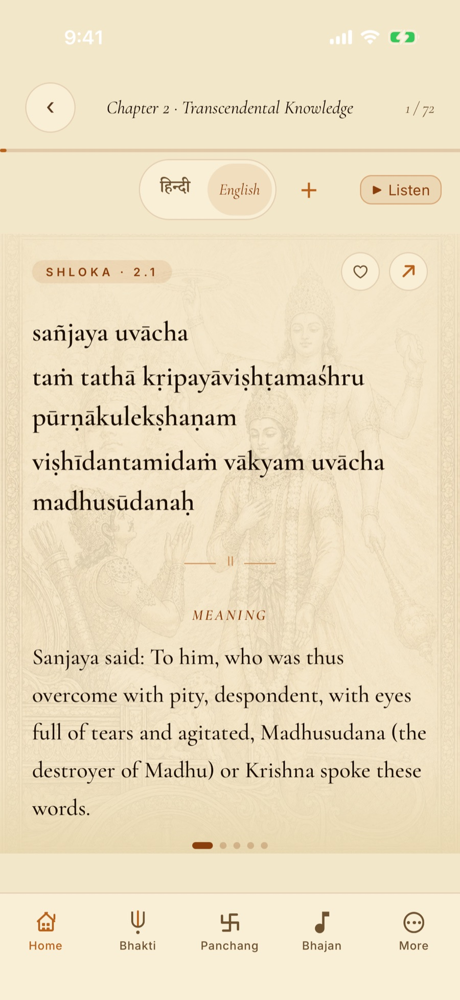
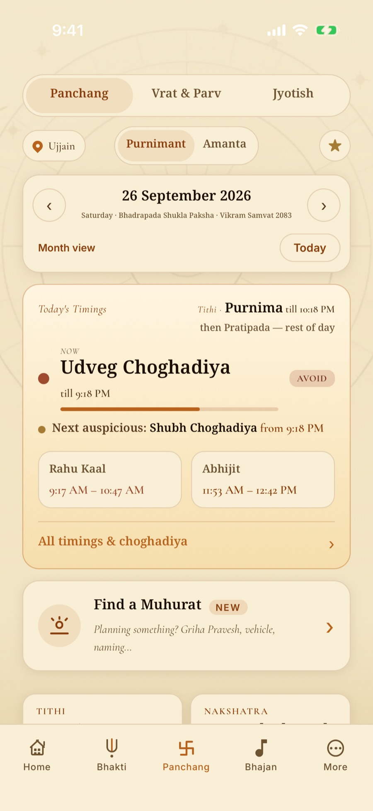
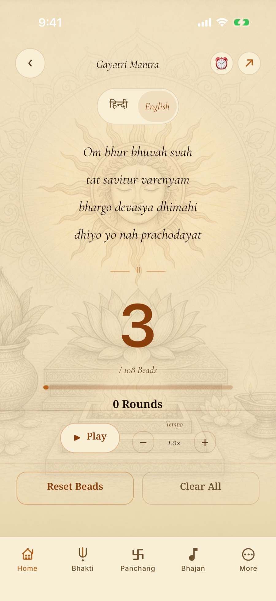
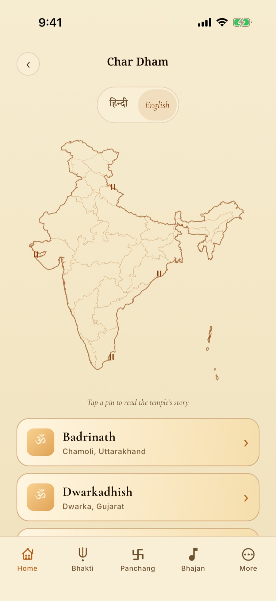

वेदांश
Vedansh
Bhagavad Gita, Panchang & japa
A portion of the Vedas, carried in your pocket. Sacred texts in a reader that behaves like a book, a Panchang computed for your city, and a practice you keep — all of it offline.
No account · No ads · No tracking

- 701Shlokas of the Gita
- 80+Vrat & festival kathas
- 4Reading languages
- 0Ads, accounts, trackers
The sacred library
A reader that behaves like a book
All eighteen chapters and 701 shlokas of the Bhagavad Gita, with meaning and commentary. Sundarkand and Ramcharitmanas selections, Vishnu Sahasranama, chalisas, aartis, stotrams, and sanskar for children — one verse to a page, on parchment, in the script you actually read.
- Every verse in Hindi and English — plus Gujarati and Kannada
- IAST transliteration for Sanskrit texts
- Swipe from verse to verse; resume where you left off
- Adjustable reading size, bookmarks, shareable verse cards
- Instant search across the whole library

Panchang & Muhurat
The day, computed for your city
Tithi, nakshatra, yoga, karana and sunrise from a real astronomy engine — not a lookup table. Purnimant and Amanta systems, Vikram Samvat, and a full month calendar you can move through.
- Daily Muhurat: Choghadiya, Rahu Kaal and Abhijit at a glance
- Vrats, festivals and 80+ kathas — follow the ones you observe
- Gentle reminders for the days you keep
- Location is optional; a city picker (Ujjain by default) works without it

Daily sadhana
A practice you actually keep
Build a daily or weekday routine with the right deity for each day. Take a Sankalp — a guided programme of four to forty-one days — and let the app carry you to completion.
- Sankalp programmes from 4 to 41 days, tracked to the end
- A digital bead counter for 108-bead mala rounds
- Japam alarms: wake to Om Namah Shivaya, the Gayatri Mantra or the Hare Krishna mahamantra — with repeat days and skip-a-day
- Sadhak profile: reads, beads, rounds and streaks

Theerth & listening
Pilgrimage, and a voice to sit with
Explore India’s dhams on a real-geography map — by state, by category, or along a yatra — each with sourced temple stories. And a calm built-in player for bhajans, mantras and aartis that keeps going in the background.
- Dhams on real geography, browsable by state, category or yatra
- Sourced stories for each site
- Bhajans, mantras and aartis in a built-in player
- Background audio, so listening survives a locked screen

Private by design
Your practice stays yours
No account. No ads. No trackers, no analytics, no profile being built in the background. Vedansh works fully offline — the texts, the panchang engine and your history all live on your device.
Location is optional. When you grant it, it is used only to compute accurate sunrise and panchang times for where you are, and it never leaves your phone.
Begin today’s reading
Free, ad-free, and offline. All texts are drawn from public-domain Hindu classics, presented with reverence for personal study and devotion.